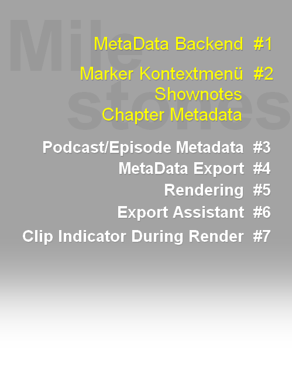

Infos für Testende
- DeveloperTools: FindCurrentlyUsedExtstatesNamesInAFile - looks through a selected file and checks, whether its strings are currently used extstates
- MarkerManagement: GetMarkerType - returns the type of a marker
- MarkerManagement: MarkerMenu\_AddStartupAction - adds a startup-action in the markermenu for a specific custom marker/region
- MarkerManagement: MarkerMenu\_AddStartupAction\_DefaultMarkers - adds a startup-action in the markermenu for a certain default-marker/region-type from Ultraschall
- MarkerManagement: MarkerMenu\_CountEntries - counts the number of entries in the markermenu for a specific custom marker/region
- MarkerManagement: MarkerMenu\_CountEntries\_DefaultMarkers - counts the number of entries in the markermenu for a specific default marker/region
- MarkerManagement: MarkerMenu\_Debug - shows in the ReaScript-console debug-messages like the right-clicked-marker-type, when using the marker/region-hijack-script(see MarkerMenu_Start)
- MarkerManagement: MarkerMenu\_GetAvailableTypes - gets the marker- and region-types, that are currently added to the marker-menu
- MarkerManagement: MarkerMenu\_GetEntry - gets the action and description of a marker-entry for a certain custom-marker/region-type
- MarkerManagement: MarkerMenu\_GetEntry\_DefaultMarkers - gets the action and description of a marker-entry for a certain default-marker/region-type from Ultraschall
- MarkerManagement: MarkerMenu\_GetLastClickedMenuEntry - gets the last clicked marker-menu-entry, including name, position, additional data and marker-type
- MarkerManagement: MarkerMenu\_InsertEntry - inserts a new marker-entry into the marker menu for a custom marker/region
- MarkerManagement: MarkerMenu\_InsertEntry_DefaultMarkers - inserts a new marker-entry into the marker menu for markers/regions of Ultraschall
- MarkerManagement: MarkerMenu\_RemoveEntry - removes the action and description of a marker-entry for a certain custom-marker/region-type
- MarkerManagement: MarkerMenu\_RemoveEntry\_DefaultMarkers - removes the action and description of a marker-entry for a certain default-marker/region-type from Ultraschall
- MarkerManagement: MarkerMenu\_SetEntry - gets the action and description of a marker-entry for a certain custom-marker/region-type
- MarkerManagement: MarkerMenu\_SetEntry\_DefaultMarkers - sets the action and description of a marker-entry for a certain default-marker/region-type from Ultraschall
- MarkerManagement: MarkerMenu\_Start - starts a background-script that hijacks the marker-context-menu when rightclicking markers/regions
- MarkerManagement: MarkerMenu\_Stop - stops the background-script that hijacks the marker-context-menu when rightclicking markers/regions
- MarkerManagement: RenumerateNormalMarkers - renumerates the shown-number of all normal-markers
- MarkerManagement: RenumerateShownoteMarkers - renumerates the shown-number of all shownote-markers
- MediaItem\_Takes: GetProjectPosByTakeSourcePos - gets the project-position of a take's source-position, obeying stretch-markers, offset, etc
- MediaItem\_Takes: GetTakeSourcePosByProjectPos - gets the source-position of a take by the project-position, obeying stretch-markers, offset, etc
- PodcastMetadata: GetAllChapters\_MetaDataEntry - gets all chapter-metadata-entries between start and endposition according to the PODCAST\_METADATA:"v1"-standard
- PodcastMetadata: GetAllShownotes\_MetaDataEntry - gets all shownote-metadata-entries between start and endposition according to the PODCAST\_METADATA:"v1"-standard
- PodcastMetadata: GetPodcast\_MetaDataEntry - returns the podcast's metadata-entry according to the PODCAST\_METADATA:"v1"-standard
- PodcastMetadata: GetPodcastChapter\_MetaDataEntry - returns a podcast's chapter-metadata-entry according to the PODCAST\_METADATA:"v1"-standard
- PodcastMetadata: GetPodcastEpisode\_MetaDataEntry - returns the podcast's episode-related metadata-entry according to the PODCAST\_METADATA:"v1"-standard
- PodcastMetadata: GetPodcastEpisodeAttributesPreset\_Name - gets the name of an episode -metadata-preset
- PodcastMetadata: GetPodcastShownote\_MetaDataEntry - returns a podcast's shownote-metadata-entry according to the PODCAST\_METADATA:"v1"-standard
- PodcastMetadata: GetPodcastAttributesPreset\_Name - gets the name of a podcast-metadata-preset
- PodcastMetadata: GetSetChapterMarker\_Attributes - gets/sets metadata-attributes of a chapter-marker(using Ultraschall 4+ methods)
- PodcastMetadata: GetSetPodcast\_Attributes - gets/sets metadata-attributes of a podcast
- PodcastMetadata: GetSetPodcastEpisode\_Attributes - gets/sets metadata-attributes of a podcast-episode
- PodcastMetadata: GetSetPodcastExport\_Attributes\_String - gets/sets string attributes for podcast-export in Ultraschall
- PodcastMetadata: GetSetPodcastExport\_Attributes\_Value - gets/sets number attributes for podcast-export in Ultraschall
- PodcastMetadata: GetSetShownoteMarker\_Attributes - gets/sets additional attributes of a shownote-marker
- PodcastMetadata: GetSetTranscription\_Attributes gets/sets transcriptions for the podcast(needs either srt or webvtt-files created externally...)
- PodcastMetadata: SetPodcastEpisodeAttributesPreset\_Name - sets the name of an episode-metadata-preset
- PodcastMetadata: SetPodcastAttributesPreset\_Name - sets the name of a podcast-metadata-preset
- PodcastMetadata: WritePodcastMetaData - creates metadata-entries according to the PODCAST\_METADATA:"v1"-standard and optionally writes it into a file or adds it to id3, vorbis-metadata-schemes
- Rendering: ResolvePresetName - resolves the name of a preset into the correct case-sensitivity, as stored in reaper-render.ini
- UserInterface: GetReaperWindow\_Position - returns the Reaper-window-position and various of its elements
#### Changes from 4.6 to 4.7
- API: cleanup - a lot of cleanup in codebase and improvements in stability for future enhancements
- API: Modulator3000 - readded api-load-speedup after I found out how to circumvent a bug in Reaper's Lua-implementation
- DeveloperTools: Create new script with dialog - allows now opening/adding already existing scripts; default path for scripts without path is now scripts-folder; scripts can also be copied from a different source into the scriptsfolder and then added(will only copy the chosen file, not possibly other ones!)
- DeveloperTools: GetPitchShiftModes - improved layout; crashed in my parser due addition of Rrreeeaaa -> fixed
- DeveloperTools: ItemStateChunk from Clipboard to item under mouse - copied statechunk into clipboard instead of setting it oooppsss -> fixed
- DeveloperTools: LangPack2Developer\_langpack\_converter - shows now conversion progress in ReaScript-console
- DeveloperTools: MonitorParmModulation - did crash, when a parameter-modulation was added after monitoring started -> fixed
- DeveloperTools: Theme Parameter Monitor - updates now the list immediately, when the current theme is changed
- DeveloperTools: Trackstatechunk from clip to track under mouse - copied trackstatechunk into clipboard instead of setting it -> fixed
- Docs: Reaper Internals - updated to Reaper 6.59 and ReaImGui 0.6.2
- Docs: render-strings - updated to Reaper 6.59(includes wmf now)
- Docs: misc\_docs-folder/Reaper-Render-Strings-docs\_Jul2018.txt - removed, due being outdated
- Helperfunctions: OpenURL - did return true in case of success, though the docs state integer should be returned -> fixed now, returns 1
- MarkerManagement: GetMarkerByScreenCoordinates - returns now an additional retval with the region-number(s)
- MarkerManagement: GetRegionByScreenCoordinates - returns now an additional retval with the region-number(s)
- MarkerManagement: GetShownoteMarkerIDFromGuid - did add error-messages to the error-messaging system without needing this -> fixed
- MarkerManagement: GetTemporaryMarker - marker_id should be 0-based -> fixed
- MarkerManagement: IsMarkerShownote - returns now the shownote-index as well
- MarkerManagement: SetShownoteMarker - allows now setting the shown_number of a shownote as well
- MarkerManagement: StoreTemporaryMarker - marker_id should be 0-based -> fixed
- ProjectManagement: GetProjectStateChunk - didn't work under certain circumstances on Linux/Mac.
- Rendering: CreateRenderCFG\_WMF\_Video - renamed to CreateRenderCFG\_WMF (old functionname is still available, though
- Rendering: GetRenderPreset\_RenderTable - bounds and options-name are now case-insensitive -> thanx to Malik
- Rendering: DeleteRenderPreset\_Bounds - bounds is now case-insensitive -> thnx to Malik
- Rendering: DeleteRenderPreset\_FormatOptions - options-name is now case-insensitive -> thnx to Malik
- Rendering: SetRenderPreset - bounds and options-name are now case-insensitive -> thnx to Malik
- UltraschallConfigFiles: GetUSExternalState - did return nil when file did not exist, though docs claimed "" -> fixed
- UserInterface: ShowMenu - did only open once in a script though it should open multiple times -> fixed
---
### 4.6 - "Can - Halleluwah" - 19th of May 2022
Has now 1532 functions, with 32 new ones
**new in this release:**
- **FromPoint-functions**
You can get now Razor-Edits, TrackEnvelopes and TakeEnvelopes by their coordinates.
- **Razor-Edit-specials**
New Razor-Edit functions in general. Remove now by index and get, if at a specific position is a razor-edit or a gap between them.
You can also check, whether a certain area overlaps with already existing razor-edit-areas.
- **JSFX-reload**
If you develop JSFX in an external editor and would like to update them in a project to use the latest version, you get functions to do so.
This should speed up developing and testing jsfx a little better.
Allows track, take and inputfx!
- **Windows Media Foundation support, as added per Reaper 6.57**
- **Shownotes for podcasts**
A new marker-type, that allows storing shownotes. Will be enhanced within the next few releases for additional metadata.
- **User Interface functions for HWND**
More comfortable functions for getting Transport, Arrange and TCP.
#### New features in 4.6
- DeveloperTools: MonitorRenderString\_Diff - monitors the diffs of the render-string, when setting them in the RenderToFile-dialog and hit Save Settings
- Envelopes: GetAllActiveEnvelopes\_Take - returns all active take-envelopes
- Envelopes: GetAllActiveEnvelopes\_Track - returns all active track-envelopes
- Envelopes: GetTakeEnvelopeFromPoint - returns the take-envelope at a certain coordinate
- Envelopes: GetTrackEnvelopeFromPoint - returns the track-envelope at a certain coordinate
- Envelopes: IsEnvelopeTrackEnvelope - checks, whether an Envelope is a TrackEnvelope
- FXManagement: InputFX\_JSFX\_Reload - reloads a jsfx in inputfx, when you've changed the jsfx-source-file
- FXManagement: TakeFX\_JSFX\_Reload - reloads a jsfx in a take, when you've changed the jsfx-source-file
- FXManagement: TrackFX\_JSFX\_Reload - reloads a jsfx in a track, when you've changed the jsfx-source-file
- Markers: AddShownoteMarker - adds a shownote-marker
- Markers: CountShownoteMarkers - counts shownote-markers in a project
- Markers: DeleteShownoteMarker - deletes a shownote-marker
- Markers: EnumerateShownoteMarkers - gets a shownote-marker
- Markers: GetGuidFromShownoteMarkerID - gets the guid of a shownote marker by its index
- Markers: GetShownoteMarkerIDFromGuid - gets the index of a shownote marker by its guid
- Markers: IsMarkerShownote - returns, if a marker is a shownote
- Markers: SetShownoteMarker - sets an already existing shownote-marker
- MidiEditor: MidiEditor\_GetFixOverlapState - gets the Automatically Correct Overlapping Notes-option, as set in the Midi-Editor -> Options-menu
- MidiEditor: MidiEditor\_SetFixOverlapState - sets the Automatically Correct Overlapping Notes-option, as set in the Midi-Editor -> Options-menu
- PodcastMetadata: PrepareChapterMarkers4ReaperExport - prepares chaptermarkers for metadata-export during rendering
- PodcastMetadata: RestoreChapterMarkersAfterReaperExport - restores chaptermarkers after metadata-export during rendering
- RazorEdit: RazorEdit\_CheckForPossibleOverlap\_Envelope - checks, whether a certain area overlaps with already existing razor-edit-areas of an envelope
- RazorEdit: RazorEdit\_CheckForPossibleOverlap\_Track - checks, whether a certain area overlaps with already existing razor-edit-areas of a track
- RazorEdit: RazorEdit\_GetFromPoint - gets a razor-edit-area/gap by coordinate
- RazorEdit: RazorEdit\_IsAtPosition\_Envelope - checks, if track has a razor-edit-area or a gap at position; also returns the position of the razor-edit-area or gap at position
- RazorEdit: RazorEdit\_IsAtPosition\_Track - checks, if envelope has a razor-edit-area or a gap at position; also returns the position of the razor-edit-area or gap at position
- RazorEdit: RazorEdit\_RemoveByIndex\_Envelope - removes a razor-edit-area by its index from an envelope
- RazorEdit: RazorEdit\_RemoveByIndex\_Track - removes a razor-edit-area by its index from a track(envelopes stay untouched)
- Rendering: CreateRenderCFG\_WMF\_Video - creates the format-settings of the windows media foundation-formats(MPEG-4, mp4, m4a)
- Rendering: GetRenderCFG\_Settings\_WMF - gets the format-settings of the windows media foundation-formats(MPEG-4, mp4, m4a)
- UserInterface: GetHWND\_ArrangeView - returns hwnd of the arrangeview, its visible area and right of arrange-state
- UserInterface: GetHWND\_TCP - returns hwnd of the track control panel, its visible area and right of arrange-state
- UserInterface: GetHWND\_Transport - returns hwnd, position, float, dock and hidden-state of transport
#### Changes from 4.5 to 4.6
- Clipboard: PutMediaItemsToClipboard\_MediaItemArray - could potentially create an undo-point -> fixed
- Docs: Reaper Internals - updated to Reaper 6.58, SWS 2.13.1.0
- MediaItems: ApplyActionToMediaItem - doesn't create an undo point anymore
- MediaItems: ApplyActionToMediaItemArray2 - doesn't create an undo point anymore
- MediaItems: GetAllMediaItemsInTimeSelection - doesn't create an undo point anymore
- MediaItems: SetMediaItemsSelected\_TimeSelection - doesn't create an undo point anymore; has now parameter for only items that are completely inside the time-selection
- RazorEdit: RazorEdit\_Remove\_Envelope - accidentally removed items on first track -> fixed
- RazorEdit: RazorEdit\_Remove\_Track - accidentally removed items on first track -> fixed
- Rendering: AddSelectedItemsToRenderQueue - had inner variable exposed; could potentially create undo-points -> fixed
---
### 4.5 - "Frank Zappa - Help I'm a Rock" - 6th of May 2022